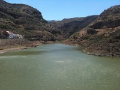

El Valle de Agaete o ‘el Valle’, como se le conoce, visto desde el mar es un alargado valle encajado entre verticales escarpes. Esta especial orografía es la que facilita que Agaete tenga un clima singular dentro de la isla de Gran Canaria. Este itinerario discurre desdelos Altos de Gáldar, a menudo dentro del mar de nubes,hasta el siempre soleado y exótico valle de Agaete.El itinerario tiene su inicio en la carretera GC-220,entre Fagajesto y Juncalillo, en el cruce del Hornillo, junto a la marquesina de la guagua.
| Dificultad | Alta |
|---|---|
| Duración | 3h 45min |
| Material necesario | Calzado cómodo y gorra |
| Mejor época | Verano |
Seguimos la carretera del Hornillo y junto a la torre de alta tensión giramos a la derecha por una senda. Este camino se adentra en el barranco y empieza a descender de manera inmediata, alternando pequeños tramos más rectos con repetidas lazadas.Después de cruzar el risco y haber descendido un buen trecho, el camino se sirve de una pequeña rampa construida junto a la roca.
Aquí veremos a nuestra izquierda un pequeño edificio. Es un molino que todavía conserva la turbina de madera y esparcidas delante suyo, algunas de las piedras de moler. Estas piedras están construidas por dovelas labradas independientemente y luego unidas por un cincho metálico. En función de la sección de las piedras, plana o trapezoidal, podemos suponer si eran las móviles o las fijas.Siguiendo el camino, pasamos junto a un lavadero y otro molino, este medio invadido por la maleza.
Más abajo, desembocamos en un camino con la traza muy marcada. Es el camino de Agaete al Hornillo. Nosotros giramos a la derecha, en dirección AGAETE y en el lado opuesto del barranco, podremos ver un curioso edificio, con una alta torre. Es la columna de alimentación de los molinos. Enseguida pasaremos entre las casas del vecindario del Sao y, por la calle, accedemos a la carretera hormigonada que seguimos hacia la izquierda cuesta abajo, hasta la carretera principal que seguimos para adentrarnos en el valle. El camino, en dirección AGAETE se bifurca de la carretera y después de un tramo en el que llanea debajo de la carretera, gira un recodo y entonces desciende más decidido por el pinar.
Pasamos junto al edificio de un antiguo hotel, el Princesa Guayarmina, y pasamos entre dos portales mientras continuamos bajando. Este es el barrio de los Berrazales, famoso por el manantial de aguas ferruginosas. Ya en el barranco, ignoramos un puentecito y continuamos bajando entre el muro del bancal y el lecho del barranco, que seguimos un buen tramo. Nos unimos a una calle hormigonada, pero continuamos hacia AGAETE para continuar luego por una carretera asfaltada. Dejamos la carretera por un camino empedrado que se bifurca a la izquierda y en la siguiente bifurcación continuamos descendiendo por la izquierda para pasar junto a una casa blanca con barandilla de color verde.